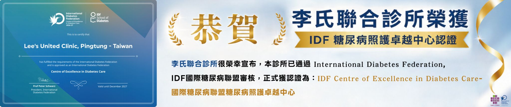

✚
活力醫療
☰
關於我們
門診時間
醫療團隊 ▾
醫療團隊 ▾
新陳代謝科
神經內科
腎臟內科
眼科
泌尿科
肝膽腸胃科
心臟內科
胸腔內科
居家護理師
護理衛教師
護理師
營養衛教師
血液透析護理師
醫檢師
心理師
藥師
智能透析
❮

❯
📢 最新消息
看更多
💡 衛教專區
看更多
▶️ 影片專區
看更多
健康講座：吃得對，活得好
李院長 - 樂齡飲食全攻略
醫療衛教動畫
一分鐘看懂連續血糖監測
透析中心導覽
開箱智能透析設備
⬆